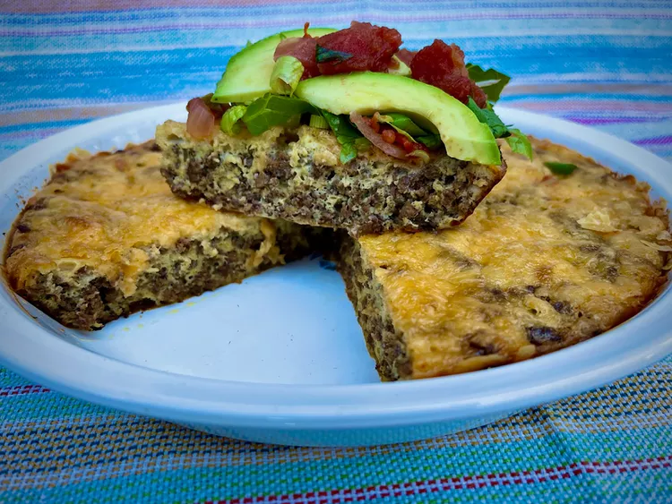

Crustless Taco Pie

Description
Whether you want a quick and easy dinner, or a tasty breakfast, this crustless
taco pie will fill the bill. Top with your favorite taco toppings, such as lettuce,
avocado, pico de gallo, or even sour cream. Refrigerate any leftovers in a sealed
container for up to 5 days.
Ingredients
- 1 pound lean ground beef
- 3 tablespoons bold taco seasoning
- 6 large eggs
- 1/3 cup heavy cream
- 1/4 teaspoon granulated garlic
- 1 cup shredded Cheddar cheese
Directions
- Preheat over to 350 degrees. Grease a 9-inch pan.
-
Break up ground beef into a 10-inch skillet over medium heat; sprinkle on bold taco
seasoning. Cook and stir beef in the hot skillet until browned and crumbly, 5 to 7
minutes. Place beef in the bottom of the prepared pie pan.
-
Whisk eggs, cream, and granulated garlic together in a bowl until well combined;
pour eggs over beef. Sprinkle grated Cheddar cheese evenly over the top.
-
Bake in the center of the preheated oven until the eggs are set and cheese is melted,
about 30 minutes. Remove from the oven and place on a cooling rack for about 5 minutes.
Return to home